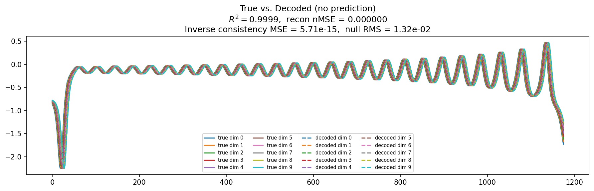
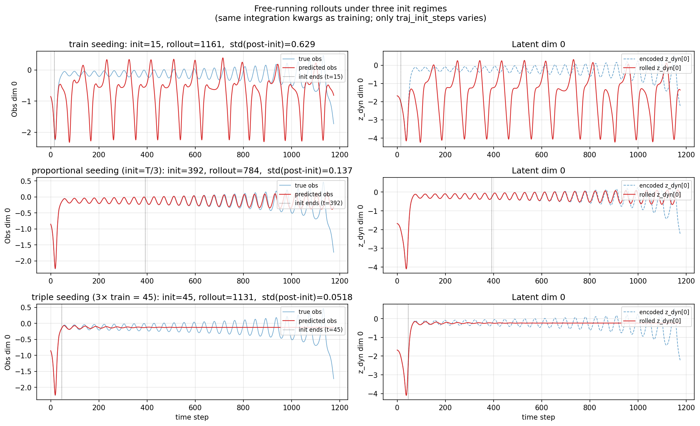
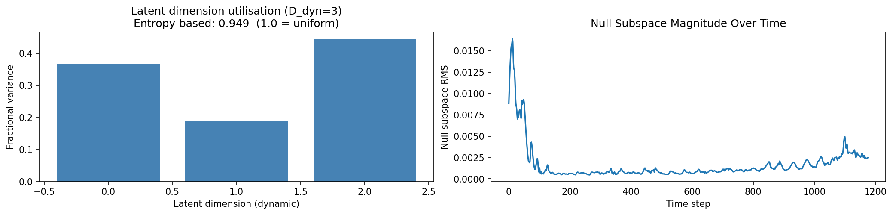
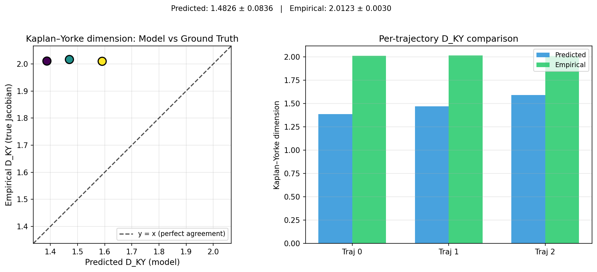
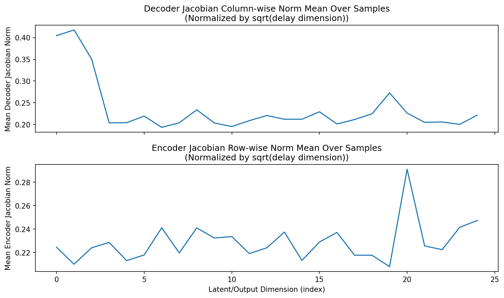
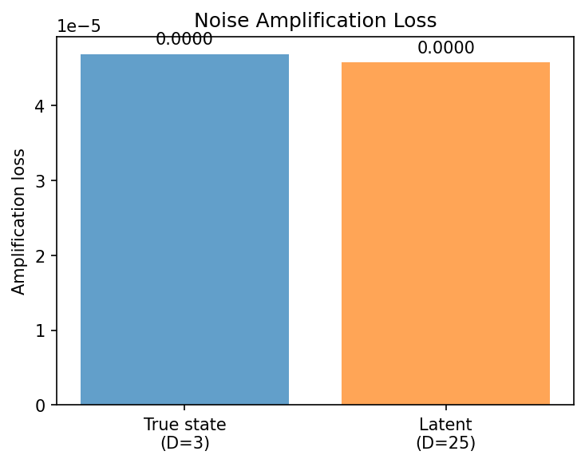
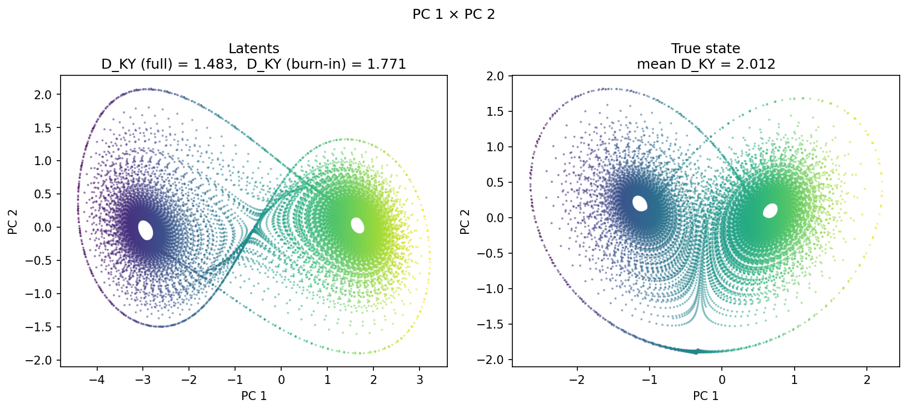
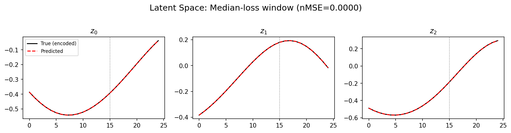
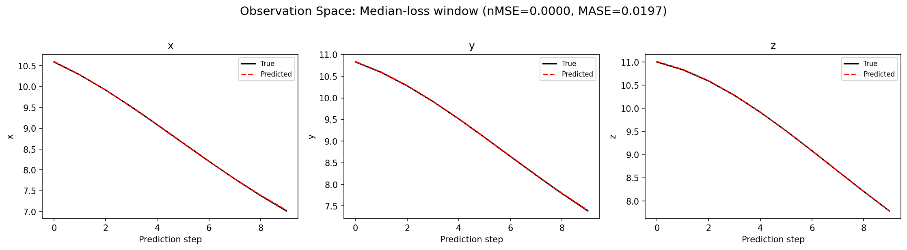

lorenz_partial_25d_additive_mse_uniform__lc_sweepProject: Lorenz_INDpartial_N25_D1_NormTrue_T3__JacobianODE
Launched: 2026-04-16T02:10:11Z
Completed: 2026-04-16T14:30:16Z
Outcome: complete_clean
Git: latent-JacobianODE @ 1010983
Expected runs: 18
lorenz_partial_25d_additive_mse_uniformDescription
Partial-obs Lorenz, x-coordinate only, n_delays=25, z_dyn=3. Plain MSE, additive coupling. reconstruction_mode='uniform' — training loss (decoded prediction + reconstruction) scored on the full 25-D delay-embedded state. Validation monitor automatically uses 'most_recent' (see validation_step), so checkpoint selection is unchanged. kl_null_weight still 0. obs_noise_scale 0. LC weight swept.
Hypothesis
The sufficient-statistic hypothesis for partial-obs: the encoder has no incentive to surface trajectory history into z_dyn when training loss only requires reconstructing the current frame. Training on the full delay-embedded state should force z_dyn to encode a more complete summary of the window — because reconstructing older lags directly constrains what information the encoder maps where. Expected: better Lyapunov spectrum recovery and val/trajectory_r2 on the live-frame monitor than the most_recent-trained partial_25d_mse sweep, with similar or lower LC optima. If this moves the needle, partial-obs training should default to uniform going forward; if it doesn't, n_delays or kl_null is the real bottleneck.
Success criteria
Swept axes (2): training.lightning.loop_closure_weight, training.lightning.obs_noise_scale
Chosen run (by best_traj_loss): peygv8ks — traj_loss=0.00005, MASE=0.0971, R²=0.9999, LC loss=0.553, epoch=161.0
Swept-axis values at chosen run: training.lightning.loop_closure_weight=1.0e-06 · training.lightning.obs_noise_scale=0
Runs analyzed: 18 (expected 18)
| run_idx | run_id | training.lightning.loop_closure_weight |
training.lightning.obs_noise_scale |
best_traj_loss | best_MASE | R² | LC loss | epoch |
|---|---|---|---|---|---|---|---|---|
| 1 | peygv8ks |
1.0e-06 | 0 | 0.00005 | 0.0971 | 0.9999 | 0.553 | 161.0 |
| 0 | q8wt4mmn |
0 | 0 | 0.00005 | 0.1106 | 0.9998 | 4.517 | 119.0 |
| 2 | 2yxz4iia |
1.0e-05 | 0 | 0.00005 | 0.1016 | 0.9998 | 0.052 | 161.0 |
| 3 | lvwmhbz9 |
1.0e-04 | 0 | 0.00006 | 0.1066 | 0.9998 | 0.006 | 188.0 |
| 4 | 4npej2do |
0.001 | 0 | 0.00007 | 0.1208 | 0.9998 | 0.001 | 196.0 |
| 5 | zai8ulnh |
0.01 | 0 | 0.00012 | 0.2038 | 0.9996 | 0.000 | 132.0 |
| 6 | 46pa8cfq |
0.1 | 0 | 0.00015 | 0.2412 | 0.9995 | 0.000 | 193.0 |
| 14 | 5oh7mqlg |
0.01 | 0.01 | 0.00019 | 0.3123 | 0.9994 | 0.032 | 91.0 |
| 7 | 71d6sw19 |
1 | 0 | 0.00020 | 0.3056 | 0.9994 | 0.000 | 193.0 |
| 13 | 2oruo3tc |
0.001 | 0.01 | 0.00023 | 0.3663 | 0.9993 | 0.555 | 67.0 |
| 15 | z6mcl86x |
0.1 | 0.01 | 0.00024 | 0.3770 | 0.9992 | 0.000 | 186.0 |
| 8 | x462gnea |
10 | 0 | 0.00036 | 0.4286 | 0.9989 | 0.000 | 108.0 |
| 16 | u0hnf2o8 |
1 | 0.01 | 0.00042 | 0.5273 | 0.9987 | 0.000 | 187.0 |
| 12 | takuntlk |
1.0e-04 | 0.01 | 0.00064 | 0.6315 | 0.9979 | 0.161 | 16.0 |
| 11 | l2jhtjur |
1.0e-05 | 0.01 | 0.00139 | 1.0886 | 0.9955 | 0.850 | 11.0 |
| 10 | bcadg9m1 |
1.0e-06 | 0.01 | 0.00146 | 1.0566 | 0.9952 | 8.474 | 12.0 |
| 9 | bgxeww20 |
0 | 0.01 | 0.00149 | 1.1548 | 0.9952 | 28.499 | 13.0 |
| 17 | 2pek7xz7 |
10 | 0.01 | 0.00756 | 2.2773 | 0.9757 | 0.000 | 24.0 |
obs_noise_scale| obs_noise_scale | Best LC weight | Best traj loss | MASE at best | R² | LC loss | epoch |
|---|---|---|---|---|---|---|
| 0.0 | 1.0e-06 | 0.00005 | 0.0971 | 0.9999 | 0.553 | 161.0 |
| 0.01 | 1.0e-02 | 0.00019 | 0.3123 | 0.9994 | 0.032 | 91.0 |
| Criterion | Verdict | Note |
|---|---|---|
| Best run's leading Lyapunov exponent > 0 | Unknown | |
| Best run's predicted Lyapunov spectrum within ~30% of empirical | Unknown | |
| val/trajectory_r2 at best-LC improves over partial_25d_mse most_recent baseline | Unknown | |
| No blow-up of loop closure during training (uniform loss doesn't break the encoder-decoder cycle) | Unknown |
Automated verdicts use simple numeric-threshold parsing and may mis-classify qualitative criteria. The Discussion section below takes precedence.















(to be written)
run_analytics stdoutrun_analyticsNo run_id provided — selecting best run from group 'lorenz_partial_25d_additive_mse_uniform__lc_sweep' ...
Found 18 total runs in JacobianODE/Lorenz_INDpartial_N25_D1_NormTrue_T3__JacobianODE (group=lorenz_partial_25d_additive_mse_uniform__lc_sweep)
All runs (state, loop_closure_weight, tangent_entropy_weight, kl_dyn_weight):
q8wt4mmn: state=finished, lc=0.0, te=0.0, kl_dyn=0.0
2yxz4iia: state=finished, lc=1e-05, te=0.0, kl_dyn=0.0
lvwmhbz9: state=finished, lc=0.0001, te=0.0, kl_dyn=0.0
peygv8ks: state=finished, lc=1e-06, te=0.0, kl_dyn=0.0
4npej2do: state=finished, lc=0.001, te=0.0, kl_dyn=0.0
zai8ulnh: state=finished, lc=0.01, te=0.0, kl_dyn=0.0
46pa8cfq: state=finished, lc=0.1, te=0.0, kl_dyn=0.0
71d6sw19: state=finished, lc=1.0, te=0.0, kl_dyn=0.0
x462gnea: state=finished, lc=10.0, te=0.0, kl_dyn=0.0
bgxeww20: state=finished, lc=0.0, te=0.0, kl_dyn=0.0
bcadg9m1: state=finished, lc=1e-06, te=0.0, kl_dyn=0.0
2oruo3tc: state=finished, lc=0.001, te=0.0, kl_dyn=0.0
takuntlk: state=finished, lc=0.0001, te=0.0, kl_dyn=0.0
l2jhtjur: state=finished, lc=1e-05, te=0.0, kl_dyn=0.0
u0hnf2o8: state=finished, lc=1.0, te=0.0, kl_dyn=0.0
z6mcl86x: state=finished, lc=0.1, te=0.0, kl_dyn=0.0
5oh7mqlg: state=finished, lc=0.01, te=0.0, kl_dyn=0.0
2pek7xz7: state=finished, lc=10.0, te=0.0, kl_dyn=0.0
slurm_timeout_min not found in any run config — falling back to 180 min
Including q8wt4mmn (lc=0.0): use_all_runs=True (state=finished)
Including 2yxz4iia (lc=1e-05): use_all_runs=True (state=finished)
Including lvwmhbz9 (lc=0.0001): use_all_runs=True (state=finished)
Including peygv8ks (lc=1e-06): use_all_runs=True (state=finished)
Including 4npej2do (lc=0.001): use_all_runs=True (state=finished)
Including zai8ulnh (lc=0.01): use_all_runs=True (state=finished)
Including 46pa8cfq (lc=0.1): use_all_runs=True (state=finished)
Including 71d6sw19 (lc=1.0): use_all_runs=True (state=finished)
Including x462gnea (lc=10.0): use_all_runs=True (state=finished)
Including bgxeww20 (lc=0.0): use_all_runs=True (state=finished)
Including bcadg9m1 (lc=1e-06): use_all_runs=True (state=finished)
Including 2oruo3tc (lc=0.001): use_all_runs=True (state=finished)
Including takuntlk (lc=0.0001): use_all_runs=True (state=finished)
Including l2jhtjur (lc=1e-05): use_all_runs=True (state=finished)
Including u0hnf2o8 (lc=1.0): use_all_runs=True (state=finished)
Including z6mcl86x (lc=0.1): use_all_runs=True (state=finished)
Including 5oh7mqlg (lc=0.01): use_all_runs=True (state=finished)
Including 2pek7xz7 (lc=10.0): use_all_runs=True (state=finished)
Found 18 effectively-done sweep runs:
loop_closure_weight=0.0, tangent_entropy_weight=0.0, kl_dyn_weight=0.0 -> run_id=bgxeww20
loop_closure_weight=0.0, tangent_entropy_weight=0.0, kl_dyn_weight=0.0 -> run_id=q8wt4mmn
loop_closure_weight=1e-06, tangent_entropy_weight=0.0, kl_dyn_weight=0.0 -> run_id=bcadg9m1
loop_closure_weight=1e-06, tangent_entropy_weight=0.0, kl_dyn_weight=0.0 -> run_id=peygv8ks
loop_closure_weight=1e-05, tangent_entropy_weight=0.0, kl_dyn_weight=0.0 -> run_id=2yxz4iia
loop_closure_weight=1e-05, tangent_entropy_weight=0.0, kl_dyn_weight=0.0 -> run_id=l2jhtjur
loop_closure_weight=0.0001, tangent_entropy_weight=0.0, kl_dyn_weight=0.0 -> run_id=lvwmhbz9
loop_closure_weight=0.0001, tangent_entropy_weight=0.0, kl_dyn_weight=0.0 -> run_id=takuntlk
loop_closure_weight=0.001, tangent_entropy_weight=0.0, kl_dyn_weight=0.0 -> run_id=2oruo3tc
loop_closure_weight=0.001, tangent_entropy_weight=0.0, kl_dyn_weight=0.0 -> run_id=4npej2do
loop_closure_weight=0.01, tangent_entropy_weight=0.0, kl_dyn_weight=0.0 -> run_id=5oh7mqlg
loop_closure_weight=0.01, tangent_entropy_weight=0.0, kl_dyn_weight=0.0 -> run_id=zai8ulnh
loop_closure_weight=0.1, tangent_entropy_weight=0.0, kl_dyn_weight=0.0 -> run_id=46pa8cfq
loop_closure_weight=0.1, tangent_entropy_weight=0.0, kl_dyn_weight=0.0 -> run_id=z6mcl86x
loop_closure_weight=1.0, tangent_entropy_weight=0.0, kl_dyn_weight=0.0 -> run_id=71d6sw19
loop_closure_weight=1.0, tangent_entropy_weight=0.0, kl_dyn_weight=0.0 -> run_id=u0hnf2o8
loop_closure_weight=10.0, tangent_entropy_weight=0.0, kl_dyn_weight=0.0 -> run_id=2pek7xz7
loop_closure_weight=10.0, tangent_entropy_weight=0.0, kl_dyn_weight=0.0 -> run_id=x462gnea
n_dims=25, n_latent=25, n_dyn=3, dt=0.0150
run=bgxeww20: DiagnosticMetrics(one_step_mase=3.2693686485290527, loop_closure_loss=2.123745918273926, fast_eigenvalue_fraction=0.0, trajectory_val_loss=0.024457817897200584) (from cache, n_batches=100)
run=q8wt4mmn: DiagnosticMetrics(one_step_mase=0.05621497705578804, loop_closure_loss=4.516508102416992, fast_eigenvalue_fraction=0.0, trajectory_val_loss=4.9841626605484635e-05) (from cache, n_batches=100)
run=bcadg9m1: DiagnosticMetrics(one_step_mase=0.6948620080947876, loop_closure_loss=8.474126815795898, fast_eigenvalue_fraction=0.0, trajectory_val_loss=0.0014611840015277267) (from cache, n_batches=100)
run=peygv8ks: DiagnosticMetrics(one_step_mase=0.0418035164475441, loop_closure_loss=0.5532177686691284, fast_eigenvalue_fraction=0.0, trajectory_val_loss=4.6048731746850535e-05) (from cache, n_batches=100)
run=2yxz4iia: DiagnosticMetrics(one_step_mase=0.04504145309329033, loop_closure_loss=0.05161266028881073, fast_eigenvalue_fraction=0.0, trajectory_val_loss=5.013464033254422e-05) (from cache, n_batches=100)
run=l2jhtjur: DiagnosticMetrics(one_step_mase=0.6104043126106262, loop_closure_loss=0.8503658771514893, fast_eigenvalue_fraction=0.0, trajectory_val_loss=0.0013926428509876132) (from cache, n_batches=100)
run=lvwmhbz9: DiagnosticMetrics(one_step_mase=0.042499057948589325, loop_closure_loss=0.0061804926954209805, fast_eigenvalue_fraction=0.0, trajectory_val_loss=5.583069287240505e-05) (from cache, n_batches=100)
run=takuntlk: DiagnosticMetrics(one_step_mase=0.43532806634902954, loop_closure_loss=0.16110435128211975, fast_eigenvalue_fraction=0.0, trajectory_val_loss=0.0006371960043907166) (from cache, n_batches=100)
run=2oruo3tc: DiagnosticMetrics(one_step_mase=0.5495887994766235, loop_closure_loss=0.5546743273735046, fast_eigenvalue_fraction=0.0, trajectory_val_loss=0.00022681211703456938) (from cache, n_batches=100)
run=4npej2do: DiagnosticMetrics(one_step_mase=0.045318394899368286, loop_closure_loss=0.0008834288455545902, fast_eigenvalue_fraction=0.0, trajectory_val_loss=7.184726564446464e-05) (from cache, n_batches=100)
run=5oh7mqlg: DiagnosticMetrics(one_step_mase=0.3822712004184723, loop_closure_loss=0.032049376517534256, fast_eigenvalue_fraction=0.0, trajectory_val_loss=0.00019187740690540522) (from cache, n_batches=100)
run=zai8ulnh: DiagnosticMetrics(one_step_mase=0.06424910575151443, loop_closure_loss=0.000344433676218614, fast_eigenvalue_fraction=0.0, trajectory_val_loss=0.00012025572505081072) (from cache, n_batches=100)
run=46pa8cfq: DiagnosticMetrics(one_step_mase=0.06423916667699814, loop_closure_loss=3.228276182198897e-05, fast_eigenvalue_fraction=0.0, trajectory_val_loss=0.00014737430319655687) (from cache, n_batches=100)
run=z6mcl86x: DiagnosticMetrics(one_step_mase=0.19081588089466095, loop_closure_loss=0.0002832501195371151, fast_eigenvalue_fraction=0.0, trajectory_val_loss=0.00024412125640083104) (from cache, n_batches=100)
run=71d6sw19: DiagnosticMetrics(one_step_mase=0.07779721170663834, loop_closure_loss=7.372317668341566e-06, fast_eigenvalue_fraction=0.0, trajectory_val_loss=0.0002033840137301013) (from cache, n_batches=100)
run=u0hnf2o8: DiagnosticMetrics(one_step_mase=0.27542245388031006, loop_closure_loss=5.120592322782613e-05, fast_eigenvalue_fraction=0.0, trajectory_val_loss=0.00041689162026159465) (from cache, n_batches=100)
run=2pek7xz7: DiagnosticMetrics(one_step_mase=0.8747787475585938, loop_closure_loss=1.1309413139315438e-06, fast_eigenvalue_fraction=0.0, trajectory_val_loss=0.007560731377452612) (from cache, n_batches=100)
run=x462gnea: DiagnosticMetrics(one_step_mase=0.15039539337158203, loop_closure_loss=1.9846668237732956e-06, fast_eigenvalue_fraction=0.0, trajectory_val_loss=0.0003558300086297095) (from cache, n_batches=100)
Ranking method: best_traj_loss
Best run ID: peygv8ks
Best loop_closure_weight: 1e-06
Best tangent_entropy_weight: 0.0
Best kl_dyn_weight: 0.0
Best traj loss: 0.000046
Criteria applied: ['C1', 'C2', 'C3']
Surviving: 16 / 18
Auto-selected run_id: peygv8ks
======================================================================
PARETO FRONTIER RUNS (9 runs)
======================================================================
Run ID LC Loss Traj Val Loss
------------ -------------- --------------
2pek7xz7 0.000001 0.007561
x462gnea 0.000002 0.000356
71d6sw19 0.000007 0.000203
46pa8cfq 0.000032 0.000147
zai8ulnh 0.000344 0.000120
4npej2do 0.000883 0.000072
lvwmhbz9 0.006180 0.000056
2yxz4iia 0.051613 0.000050
peygv8ks 0.553218 0.000046 <-- selected
======================================================================
RANKING METHOD COMPARISON (over 16 survivors)
======================================================================
Method Run ID LC Loss Traj Val Loss
---------------------- ------------ -------------- --------------
best_traj_loss peygv8ks 0.553218 0.000046 <-- active
pareto_knee zai8ulnh 0.000344 0.000120
geo_rank peygv8ks 0.553218 0.000046
minimax_rank zai8ulnh 0.000344 0.000120
geo_log_score peygv8ks 0.553218 0.000046
minimax_log_score 46pa8cfq 0.000032 0.000147
======================================================================
Loading run peygv8ks from JacobianODE/Lorenz_INDpartial_N25_D1_NormTrue_T3__JacobianODE ...
Train dataset shape: torch.Size([25322, 25, 25])
Validation dataset shape: torch.Size([8057, 25, 25])
Test dataset shape: torch.Size([3453, 25, 25])
Train trajectories dataset shape: torch.Size([22, 1176, 25])
Validation trajectories dataset shape: torch.Size([7, 1176, 25])
Test trajectories dataset shape: torch.Size([3, 1176, 25])
Loading checkpoint epoch=161-step=32400.ckpt...
Computing reconstruction ...
Computing MASE ...
Teacher-forced MASE: 0.0433
Free-running MASE: 0.0500
Computing latent utilization ...
Entropy-based utilization: 0.949
Null subspace mean RMS: 2.734887e-03
Computing Lyapunov exponents ...
Computing full-trajectory Lyapunov (3 test trajs, T=1176) ...
Predicted Lyapunov exponents (batch+burn-in, 128 windowed trajs):
λ_1 = +0.3551 ± 0.5255
λ_2 = -0.5030 ± 0.8453
λ_3 = -10.3751 ± 1.1271
Predicted Lyapunov exponents (full-length, 3 test trajs):
λ_1 = +0.1501 ± 0.0194
λ_2 = -0.3148 ± 0.0260
λ_3 = -10.2746 ± 0.0342
Empirical Lyapunov exponents (mean ± std):
λ_1 = +0.2716 ± 0.0605
λ_2 = -0.1016 ± 0.0797
λ_3 = -13.8370 ± 0.0514
Mean KY dim (predicted): 1.483 ± 0.084
Mean KY dim (empirical): 2.012 ± 0.003
Mean KY dim (burn-in): 1.771 ± 0.427
Computing prediction windows ...
Windows: 348 — nMSE min=0.0000, median=0.0000, mean=0.0000, max=0.0030
Computing long trajectory prediction ...
Computing encoder/decoder Jacobians ...
encoder_jacobian: (128, 25, 25)
decoder_jacobian: (128, 25, 25)
Computing amplification loss ...
Amplification loss — True state: 0.000047
Amplification loss — Latent: 0.000046